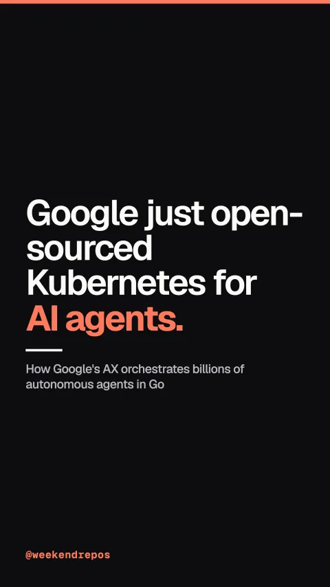

google/ax
How Google's AX orchestrates billions of autonomous agents in Go

Google just open-sourced Kubernetes for AI agents.
Declare agent workspaces and network boundaries with simple YAML manifests.
First, you declare your agent's code repository, tools, and execution goals in a clean YAML spec, just like a Kubernetes pod.
Declarative YAML · ax apply -f task.yaml
High-throughput execution designed for billions of agent tasks per cluster.
Second, instead of bloated full-system containers, AX runs on Agent Substrate to spin up sandboxed environments with microsecond startup times.
High-throughput · microsecond sandbox startup
Look over the agent's shoulder and SSH directly into the sandbox.
Third, when an agent encounters a bug, you can live-watch its steps or SSH directly into the running sandbox to inspect the workspace in real time.
Live observability · ax watch & ax ssh
Hardware-enforced network fencing keeps autonomous agents contained.
Fourth, it enforces strict network fencing and gateway policies, ensuring autonomous agents can never access unauthorized internal databases or leak API secrets.
Security fencing · isolated execution substrate
9,500 stars. Go. Apache-2.0 licensed.
Google AX has nearly ten thousand stars on GitHub, built natively in Go, and released under the Apache two license.
google/ax · Apache-2.0 · 9.5k stars